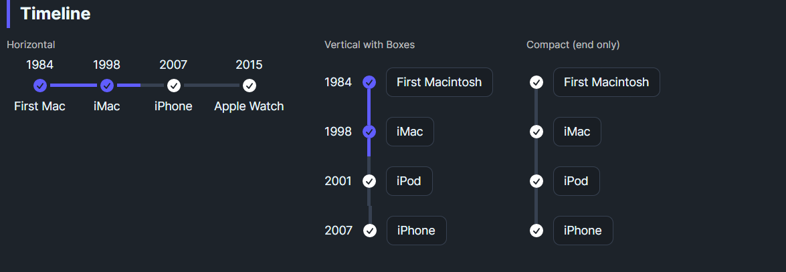

DaisyTimeline lays out timeline items horizontally or vertically. Each DaisyTimelineItem can show start/end content (labels), an optional middle icon, lines before/after, boxed styles, and active states. Supports compact mode and icon snapping for consistent alignment.
| Property | Description |
|---|---|
Orientation |
Horizontal (default) or Vertical. |
IsCompact |
Reduces spacing and sizing for dense layouts. |
SnapIcon |
Aligns middle icons to the grid for crisp placement. |
| Property | Description |
|---|---|
StartContent |
Leading text/label (e.g., year). |
MiddleContent |
Icon or node marker. |
EndContent |
Trailing text/label (e.g., description). |
HasStartLine / HasEndLine |
Show/hide line segments before/after. |
IsBoxed |
Box the content area (vertical items). |
IsActive |
Apply active styling to node/lines. |
Position |
Start or End alignment (when compact). |
Orientation, IsCompact, SnapIcon |
Inherited from parent for layout. |
<!-- Horizontal -->
<controls:DaisyTimeline Orientation="Horizontal">
<controls:DaisyTimelineItem StartContent="1984" EndContent="First Mac" HasEndLine="True" IsActive="True">
<controls:DaisyTimelineItem.MiddleContent>
<PathIcon Width="16" Height="16" Foreground="{ThemeResource DaisyPrimaryBrush}"
Data="M10 18a8 8 0 100-16 8 8 0 000 16zm3.857-9.809a.75.75 0 00-1.214-.882l-3.483 4.79-1.88-1.88a.75.75 0 10-1.06 1.061l2.5 2.5a.75.75 0 001.137-.089l4-5.5z" />
</controls:DaisyTimelineItem.MiddleContent>
</controls:DaisyTimelineItem>
<controls:DaisyTimelineItem StartContent="1998" EndContent="iMac" HasStartLine="True" HasEndLine="True" IsActive="True">
<controls:DaisyTimelineItem.MiddleContent>
<PathIcon Width="16" Height="16" Foreground="{ThemeResource DaisyPrimaryBrush}"
Data="M10 18a8 8 0 100-16 8 8 0 000 16zm3.857-9.809a.75.75 0 00-1.214-.882l-3.483 4.79-1.88-1.88a.75.75 0 10-1.06 1.061l2.5 2.5a.75.75 0 001.137-.089l4-5.5z" />
</controls:DaisyTimelineItem.MiddleContent>
</controls:DaisyTimelineItem>
</controls:DaisyTimeline>
<!-- Vertical boxed -->
<controls:DaisyTimeline Orientation="Vertical">
<controls:DaisyTimelineItem StartContent="1984" EndContent="First Macintosh" IsBoxed="True" HasEndLine="True" IsActive="True" />
<controls:DaisyTimelineItem StartContent="1998" EndContent="iMac" IsBoxed="True" HasStartLine="True" HasEndLine="True" IsActive="True" />
</controls:DaisyTimeline>IsActive to highlight completed/current milestones; combine with HasStartLine/HasEndLine to control connectors.IsCompact=True for dense sidebars; SnapIcon=True keeps icons aligned on pixel boundaries.IsBoxed=True helps differentiate items from the spine.StartContent concise (dates/labels) and EndContent for descriptions; use MiddleContent for status icons.